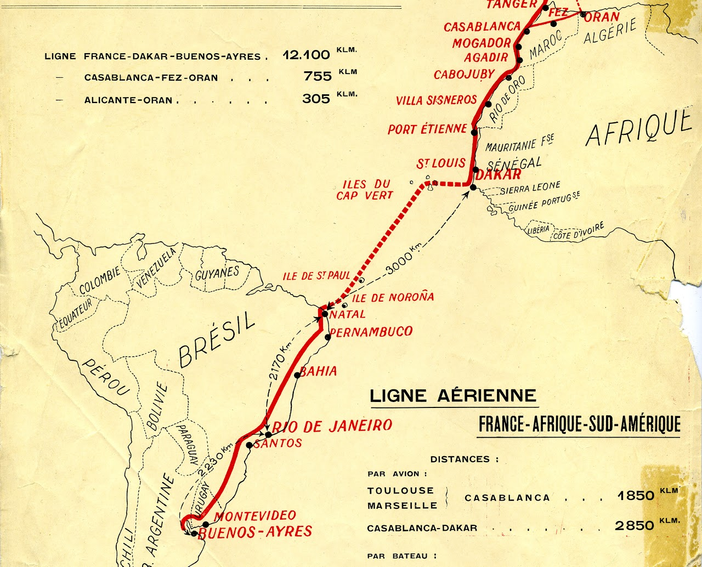

Après la première Guerre Mondiale, Pierre-Georges Latécoère rêva d’une ligne aérienne transportant le courrier à travers le monde. L’armée utilisait déjà sa propre ligne pour transporter le courrier. Mais avec la première ligne Toulouse- Barcelone, marqua le commencement des lignes aéropostales civiles. Cette ligne effectua des livraisons régulières depuis l’hiver 1918.
La compagnie était constituée d’anciens avions de guerre, reconvertis en avions civiles.
En 1919, un accord fut passé avec le Maroc, créant ainsi une ligne entre la France et Rabat. La compagnie devint alors: «Lignes Aériennes Latécoère». Plus tard cette ligne sera prolongée jusqu’à Casablanca.
En 1927, après de nombreux soucis matériels, Pierre-Georges Latécoère céda plus de 90 % de ses parts à Marcel Bouilloux-Lafont, un industriel et financier français installé au Brésil, créant ainsi la Compagnie Générale Aéropostale.
Trois ans plus tard, la compagnie était composée de 200 avions et 17 hydravions, 1500 employés dont 51 pilotes. L’Aéropostale étendu ses frontières à l’Amérique du sud , passant au-dessus de la célèbre Cordillère des Andes, reliant plusieurs pays : Chili, Argentine, Brésil… La compagnie développa également les vols de nuit, prouesse périlleuse pour l’époque, afin de gagner du temps.
Mais en 1931, suite au krak boursier de New York et au refus de soutien des politiques français, l’Aéropostale fut mis en liquidation. En 1933, elle fut fusionnée avec d’autres compagnies aériennes française pour donner naissance à la S.A. Air France.